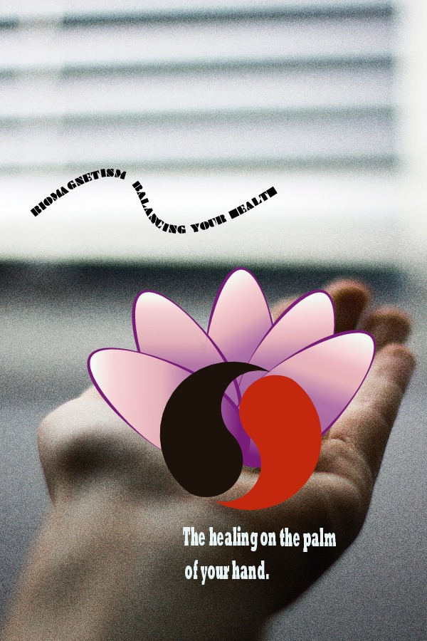

This was my first interaction with this program and I found it to be very pleasant to use it. I create this project base on my interest about alternative medicine specifically biomagnetism. In the image we can see two magnets in a Ying Yang shape that represent the balance that create the magnets, and the flower represent the interior peace that is create by the therapy.